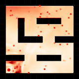

|

|
Automatic Curriculum Learning through Value Disagreement
Yunzhi Zhang*, Pieter Abbeel, Lerrel Pinto [arXiv] [Webpage] [Code] Preprint. For goal-conditioned RL, we introduce a goal sampling strategy that prioritizes goals that maximize the epistemic uncertainty of a learned Q-value function. This simple technique fascilitates learning by providing a strong learning signal even with sparse-reward. |
 |
Asynchronous Methods for Model-based Reinforcement Learning
Yunzhi Zhang*, Ignasi Clavera*, Boren Tsai, Pieter Abbeel [arXiv] [Webpage] [Code] CoRL, 2019 (Spotlight). NeurIPS Deep RL Workshop, 2019. We propose an asynchronous framework for general model-based reinforcement learning methods which parallelizes data-collection and model training. Apart from improving wall-clock-time efficiency, the asynchronous setting encourages exploration and reduces policy overfitting. |